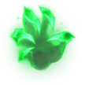

Rünler, League of Legends’ta oyuncuların şampiyonlarını özelleştirmelerini sağlayan önemli bir sistemdir. Oyunun
başında seçilen rünler, şampiyonun yeteneklerini, dayanıklılığını, hasarını veya hareket kabiliyetini
artırabilir.
| Özellik |
Açıklama |
Görsel |
| İsabet |
Güçlendirilmiş saldırılar ve sürekli hasar |
| Yenilmez |
- Rakip şampiyona hasar veren normal saldırılar veya yetenekler 5 saniyeliğine 2 Yenilmez yükü
kazandırarak yük başına 1.8 ila 4 Değişken Kuvvet kazanması sağlar.
- En fazla 12 yük biriktirilebilir.
- Menzilli şampiyonlar normal saldırı başına sadece 1 yük kazanır.
- Azami yüke ulaştığında şampiyonlara verdiğin hasarın %8 kadarını iyileşirsin (menzilli
şampiyonlar için %5).
|
 |
| Saldırıya Devam |
- Bir rakip şampiyona art arda 3 normal saldırı isabet ettirmek seviyeye bağlı olarak 40 ila 160
İlave Değişken Hasar verir.
- Şampiyonlarla çatışmadan ayrılana dek verdiğin hasarı %8 arttırır.
|
 |
| Ölümcül Tempo |
- Bir rakip şampiyona saldırmak 6 saniyeliğine [yakın dövüşçüler için %6, menzilli şampiyonlar
için %4] Saldırı Hızı kazandırır.
- En fazla 6 yük birikebilir.
- Azami yüke ulaştığında saldırı halinde [yakın dövüşçüler için 9 ila 30, menzilli şampiyonlar
için 6 ila 24] İlave Değişken Hasar verirsin.
- Bu hasar %1 İlave Saldırı Hızı başına %1 artar.
|
 |
| Ayak Çabuk |
- Saldırmak ve hareket etmek Enerji yükleri biriktirir.
- 100 yüke ulaştığında bir sonraki saldırın Enerji Dolu hale gelir.
- Enerji Dolu saldırılar 10 ila 130 (+0.1 İlave SG, +0.05 YG) can yeniler ve 1 saniyeliğine %20
Hareket Hızı sağlar.
- Menzilli şampiyonlar için iyileştirme %60, hareket hızı ilavesi %75 etkilidir.
- Minyonlardan elde edilen tüm iyileştirme etkileri %15 etkilidir.
|
 |
| Hakimiyet |
Anlık hasar ve hedefe ulaşma |
| Elektrik Ver |
- Bir şampiyona 3 saniye içinde 3 farklı saldırı veya yetenek isabet ettirmek ilave değişken hasar
verir.
- Hasar: 70 ila 240 (+0.1 İlave SG, +0.05 YG).Bekleme Süresi: 20 sn.
|

|
| Kara Hasat |
- Canı %50 değerinin altındaki şampiyonlara hasar vermek değişken hasar uygular ve hedefin ruhunu
hasat ederek Kara Hasat hasarını kalıcı olarak 11 arttırır.
- Kara Hasat Hasarı: 30 (ruh başına +11 Hasar) (+0.1 İlave SG) (+0.05 YG) Bekleme Süresi: 35 sn.
(Bekleme süresi alt etmelerin ardından sıfırlanarak 1.0 sn. olur.)
|
 |
| Keskin Sağanak |
- Rakip şampiyonlara saldırmak en fazla 3 saldırıya kadar %140 Saldırı Hızı (menzilli şampiyonlar
için %80) kazandırır.
- Saldırılar arasında 3 saniyeden uzun süre geçerse etki kaybolur.
- Bekleme Süresi: 10 sn.Saldırı sıfırlamaları, saldırı sınırını 1 arttırır.Geçici olarak saldırı
hızı sınırını aşmana izin verir.
|
 |
| Büyücülük |
Güçlendirilmiş yetenekler ve kaynak yönetimi |
| Aery'i Çağrı |
- Rakip şampiyonlara normal saldırı veya yeteneklerle hasar vermek Aery'yi onlara göndererek
seviyeye bağlı olarak 10 ila 50 (+0.05 YG) (+0.1 İlave SG) Hasar verir.
- Takım arkadaşlarını yeteneklerle güçlendirmek veya korumak onlara Aery'yi göndererek seviyeye
bağlı olarak 30 ila 100 (+0.05 YG) (+0.1 İlave SG) Kalkan sağlar.
- Aery sana geri dönene kadar yeniden gönderilemez.
|
 |
| Sihirli Yıldız |
- Bir şampiyona yeteneklerle hasar vermek, şampiyonun bulunduğu noktaya bir meteor fırlatır veya
bekleme süresindeyse, Sihirli Yıldız'ın kalan bekleme süresini azaltır.
- Değişken Hasar: Seviyeye bağlı olarak 30 ila 130 (+0.05 YG ve +0.1 İlave SG) Bekleme Süresi: 20
ila 8 sn. Bekleme Süresinde Azalma: Tek Hedef: %20 Alan Etkisi: %10 Zamanla Verilen Hasar: %5
|
 |
| Sürat Coşkusu |
- Rakip şampiyonlara 4 saniye içinde 3 saldırı veya farklı yetenek isabet ettirmek 3 saniyeliğine
seviyeye bağlı olarak %25 ila %50 Hareket Hızı ve %75 Yavaşlatma Direnci sağlar.
- Hareket hızı ilavesi menzilli şampiyonlar için %75 etkilidir.
- Bekleme Süresi: 30 ila 10 sn.
|
 |
| Azim |
Dayanıklılık ve kitle kontrolü |
| Hortlağın Pençesi |
- Çatışmada olduğun her 4 saniyede bir, şampiyonlara yönelik sonraki normal saldırın:Azami canının
%3.5 kadarına eşdeğer miktarda ilave büyü hasarı verir.
- Seni azami canının %1.3 kadarı iyileştirir.
- Canını kalıcı olarak 5 arttırır.
- Menzilli Şampiyonlar: Hasar, iyileştirme ve kazanılan kalıcı can %60 etkilidir.
|

|
| Artçı Şok |
- Bir şampiyonu hareketsiz bıraktıktan sonra mevcut zırh ve büyü direnci değerlerini 2.5
saniyeliğine 35 + ilave dirençlerinin %80 kadarına eşdeğer miktarda arttırır.
- Sonrasında infilak ederek yakındaki rakiplere büyü hasarı verir.
- Hasar: 25 ila 120 (+ ilave canının %8 kadarı)Bekleme Süresi: 20 sn.Artçı Şok'un sağladığı
dirençler seviyeye bağlı olarak 80 ila 150 ile sınırlıdır.
|
 |
| Muhafız |
- Birim mesafedeki ve yeteneklerinle hedef aldığın takım arkadaşlarını 2.5 saniyeliğine koruma
altına alırsın.
- Koruma boyunca sen veya hedef aldığın takım arkadaşın belli bir miktarda hasar alırsa, ikiniz de
1.5 saniyeliğine kalkan kazanırsınız.
- Bekleme Süresi: 90 ila 40 sn. Kalkan: 45 ila 120 + yetenek gücünün %12.5 kadarı + ilave canının
%8 kadarı.Tetiklenme Eşiği: Azaltma etkilerinin ardından 90 ila 250 Hasar
|
 |